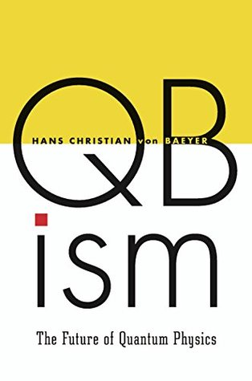

QBism: The Future of Quantum Physics
Reseña por Jorge I. Zuluaga

Ver detalles · Ver reseña en GoodReads (necesita cuenta)
Este librito ameno, bien escrito y muy claro, es ahora el único culpable de ello.
No sé si me arrepentiré cuando el cubismo caiga en desgracia (espero que no lo haga), si tendré que borrar toda huella de mi simpatía hacia él, incluyendo tal vez esta reseña (¡es broma!). Lo cierto es que, como el autor, ¡estoy encantado con la idea!
Había oído hablar de esta "curiosa" interpretación de la mecánica cuántica, que nació hace apenas poco más de 15 años, por algunas referencias en blogs y artículos de corte filosófico en los arXiv (http://arxiv.org).
No había, sin embargo, profundizado mucho, pensando justamente que se trataba de otro intento de arreglar un problema que tiene más de 70 años; a saber, el problema de que la mecánica cuántica funciona, pero su significado profundo es todavía desconocido por los físicos.
Recientemente, y animado por el deseo de escribir un pequeño blog sobre "el asunto cuántico", me decidí a leer más sobre el cubismo. Qué mejor manera para empezar a hacerlo que con un texto divulgativo (sí, lo admito; a los profesionales también nos tienen que explicar primero las cosas con "plastilina").
No pudo ser más acertada mi elección.
El libro está impecablemente organizado (y tal vez es por ello que logra su cometido), como no esperaría menos de un profesional de la física con una larga experiencia enseñando esta disciplina. A veces la física es tan difícil de enseñar y de aprender que el buen profesor debe saber organizar las ideas de modo que no haya manera de acercarse a ellas sin creer al final que se entienden un poco (aunque muchas veces sea una ilusión).
El libro comienza por un repaso de las primeras ideas de la teoría cuántica (la radiación de cuerpo negro, el efecto fotoeléctrico y el átomo de Bohr). Temas todos muy trillados en la divulgación, pero que el prof. Von Baeyer aborda de manera amena y original. Así, por ejemplo, su explicación de la solución de Planck al problema de la radiación de cuerpo negro es bastante original y creo que la seguiré usando en todas mis charlas y cursos.
A continuación aborda los temas más interesantes y profundos de la mecánica cuántica, aquellos donde nacen justamente los problemas que tienen a los físicos en serios embrollos: el papel del observador, el colapso de la función de onda, la incertidumbre cuántica, ¿función de onda o matrices?, la paradoja de la tortuga de Schrödinger (me niego a sacrificar un gatico para esto), el problema de Wigner, etc.
Me encantó en particular la manera como describe la función de onda más simple de todas, es decir, aquella de un cúbit, y la forma en la que usa esta función de onda en el resto del libro para explicar las cosas más extrañas de la mecánica cuántica y las soluciones del cubismo.
A continuación aborda el tema más novedoso del cubismo: la concepción bayesiana de la probabilidad.
Para aquellos que, como yo, disfruten lecturas agradables sobre probabilidad y estadística, encontrarán las páginas dedicadas al tema en este libro muy entretenidas y claras.
Para quienes no hayan oído hablar del "enfoque bayesiano" de la estadística, Von Baeyer nos recuerda que fue este el enfoque original de la teoría de la probabilidad, incluso aquella desarrollada por el padre de la teoría, Pierre-Simon de Laplace.
En muy pocas palabras, lo que el bayesianismo enseña es que las probabilidades que asignamos a eventos individuales o muy simples (p. ej., la probabilidad de que en el lanzamiento de una moneda obtenga cara o sello, o la probabilidad de que el espín del electrón tenga una determinada orientación en un experimento) no son "objetivas" (no tienen una existencia independiente del observador), ni se pueden deducir con principios racionales. Al contrario, se basan en las "creencias subjetivas" con las que los agentes que estudiamos el mundo juzgamos los fenómenos. Muchas probabilidades "derivadas" de ellas sí siguen reglas matemáticas rigurosas (justamente las de la teoría de la probabilidad), pero se basan primero en consideraciones heurísticas.
He allí la clave del cubismo: las probabilidades cuánticas y la función de onda, que en la interpretación convencional de la mecánica cuántica está asociada con ella, no son tampoco objetivas; no tienen una existencia independiente del experimento o el "observador". Se construyen en el momento en el que se realiza el experimento y pueden cambiar dependiendo de cómo o quién haga el experimento, pero, más importante, de si cambian o no las condiciones de un sistema (una propiedad que resuelve magistralmente el problema del colapso de la función de onda y de la no localidad cuántica).
Este enfoque contrasta con el convencional enfoque "frecuentista", tanto de la estadística como de la probabilidad cuántica (y que se puso de moda en estadística apenas en el siglo XX, aunque parece que sus días están contados). Según este enfoque, las probabilidades son una propiedad objetiva de los fenómenos aleatorios que pueden "medirse" realizando experimentos (reales o ficticios) y contando "casos favorables y casos posibles".
Si no entienden una palabra de lo que digo, ¡es obvio! ¡lean el condenado librito! (y empiecen por las decenas de artículos en línea, incluyendo Wikipedia, que explican el enfoque bayesiano con muchos ejemplos).
En la última parte procede a resolver los problemas abiertos de la mecánica cuántica, usando los más sencillos argumentos y razonamientos, soportados justamente en lo que presentó en todas las secciones anteriores.
El resultado es impresionante. El cubismo resuelve algunos de los problemas más delicados de la mecánica cuántica: el colapso de la función de onda (el más difícil de todos, a mi parecer) o el problema de Wigner (que está de alguna manera emparentado con la paradoja del gato de Schrödinger).
Al final se extiende aún más lejos hasta especular en la posibilidad de que el cubismo (o cualquier cosa que se derive de su enfoque heurístico del problema) podría acercarnos a resolver el problema de la conciencia, la naturaleza de la indagación científica e incluso a una unificación entre la física y la psicología.
¡Parecen ideas locas! Algo sacado de algún libro de nueva era o de un documental de History Channel.
Pero no lo es.
Si bien el cubismo no cuenta todavía con una gran fanaticada entre los expertos (creo que porque todavía no lo conoce todo el mundo), la idea nació en el seno de la escuela de pensamiento del grandioso John Wheeler, el "padre intelectual" de Richard Feynman, y ha sido desarrollada por profesionales de la física de primer nivel.
Lo que soy yo, como físico, no volveré a pensar en estos problemas de la misma manera. He sido "tocado" por el cubismo y por su llamado a que volvamos a los viejos tiempos en los que la filosofía jugaba un papel central en el desarrollo de las ideas de la física.
Prueben a ver si a ustedes les pasa lo mismo.